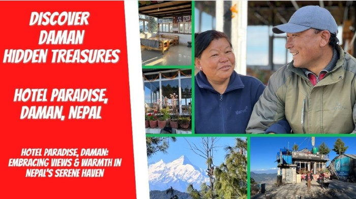
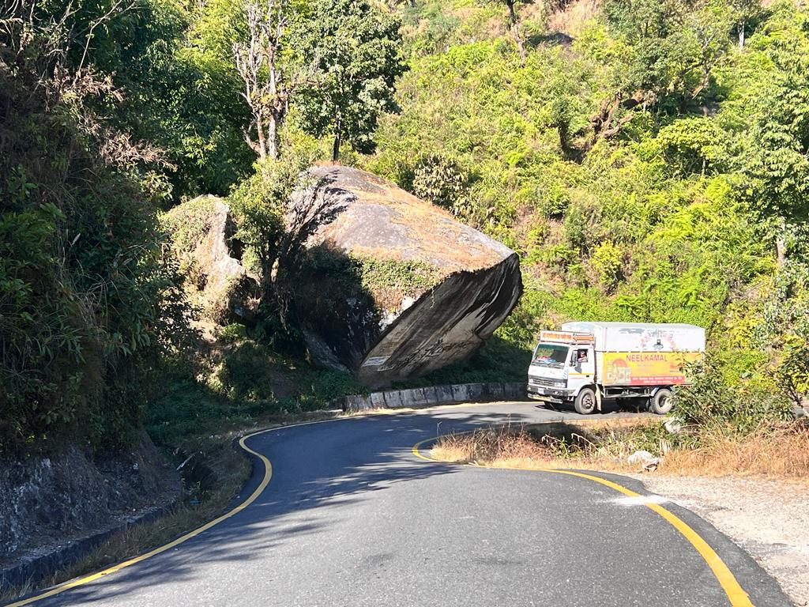
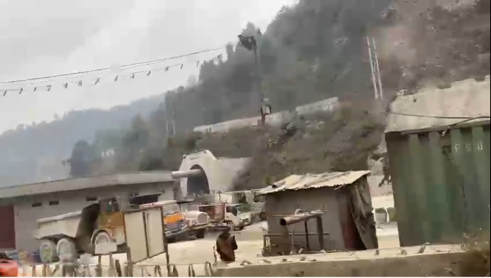
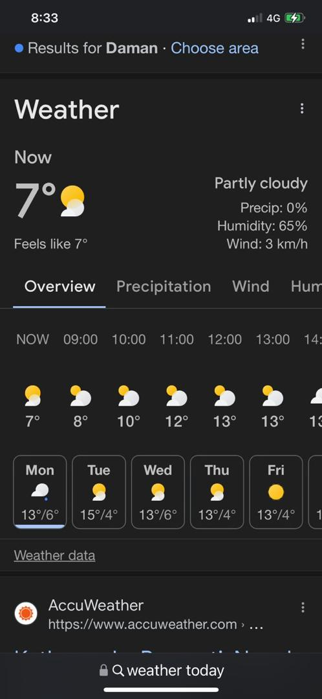

Real Story · 中文
Daman 的路，yal… 可是到了以后，真的像 Paradise。
03/12/2023，我抵达 Nepal 的 Daman。 那里的路真的不好走。山路、石头、弯道、坡度，还有 Toyotaki 一路承受的震动。 前面才刚经历过被石头卡住、被 Sanjay Gole 一家人帮忙的 roadside rescue。
到了 Daman，我停在 Hotel Paradise。 那里算是 Daman 很高的位置之一，风景很开阔，空气也完全变了。 我向他们询问，能不能让我把 Toyotaki 停在 roadside carpark 过夜，我愿意付一些费用。
他们答应了。 就这样，我在 Hotel Paradise 停留了三天。
那三天很美。 山上的空气很清，风会轻轻吹过脸，天空很干净，远处可以看到 Himalayan peaks。 从 Hotel Paradise 往外看出去，那种 view 不是普通的风景照可以解释的。 它像是路给我的一个恢复空间。
Hotel Paradise 只有几间 cozy rooms。 经营这里的夫妻很害羞，可是他们很温暖。 他们不是那种很 loud 的 hospitality，而是安静、真实、让人觉得舒服的照顾。
当然，Tuzi Vlogs 的 director 又上线了。 两夫妻本来很 shy，我却说：不可以，couple must hand-in-hand。 结果他们真的牵手给我拍。 Naughty leh me。
可是也因为这样，那个画面留下来了。 不是商业宣传照，而是一对很害羞、很可爱的 Nepal couple， 在他们自己的 mountain haven 里，被一个路过的 Malaysian solo campervan lady 叫来牵手。
05/12/2023，我继续往 Kathmandu 移动。 可是 Daman 的三天留了下来。 那不是停下来浪费时间，而是路知道我需要休息一下。
Road Context · Before Paradise
The road that made Toyotaki sail.
Before Hotel Paradise became a shelter, the road to Daman had already tested both Tuzi and Toyotaki. On 03/12/2023, the mountain road brought giant rocks, narrow bends, and rough construction sections.
Some parts of the paved road looked good for a short distance, then suddenly became construction again. It felt like every two kilometres, the road changed personality. Toyotaki did not simply drive through it — she was almost sailing on the road.
Later, Tuzi would understand more about why the main road was like this, after getting the chance to interview a retired English teacher. But on that day, she only knew one thing clearly: Nepal was beautiful, but the road was not easy.


Supplementary Video · Toyotaki Sailing
Not driving — sailing.
This video preserves the road feeling better than a still photo can. Toyotaki moved through the rough construction sections with a motion that felt almost like sailing: rocking, shaking, and carrying the whole home across unfinished road.
Cold Night · 04/12/2023
Very cold, very cold.
On 04/12/2023, Daman was cold — around 7°C. For someone from Malaysia, this was not just “cool weather.” It was the kind of cold that made the campervan feel like a small survival room.
Wrapped inside Toyotaki, Tuzi felt the mountain air clearly. Hotel Paradise was beautiful, but Daman also reminded her that beauty and discomfort often arrive together on the road.

Related Video · Tuzi Vlogs Archive
Discover Daman Hidden Treasures.
This video preserves the mountain view, the weather, the quiet rooms, and the shy warmth of the couple who ran Hotel Paradise. It is both a travel video and a gratitude note.
English Memory Summary
Three days of shelter above the road.
Tuzi arrived in Daman on 03/12/2023 after a difficult Nepal road. She stopped at Hotel Paradise, one of the high spots in Daman, and asked for permission to stay in the roadside carpark with some payment.
What she found there was more than a place to park. The mountain air, the Himalayan views, the quiet rooms, and the genuine hospitality of the couple who ran the hotel gave her a rare pause.
The couple were shy, but as the “director” of Tuzi Vlogs, Tuzi playfully asked them to hold hands for the camera. That small naughty moment became part of the warmth of the memory.
She stayed for three beautiful days, then continued toward Kathmandu on 05/12/2023.
Heart Statement
有时候，Paradise 不是豪华。
它是一条很难走的山路之后， 一个愿意让你停车的地方。
是清冷的空气，是 Himalayas 的远景， 是几间小房间，是一对害羞却温暖的夫妻。
是你累了以后，终于可以停下来三天。
Paradise was not luxury. It was permission to rest.